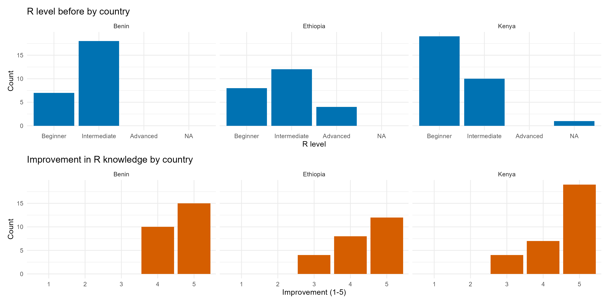

Introduction
From November 17 to 25, 2025, Bioconductor held its first in-person training workshop in West Africa. The workshop was held at the Genetics, Biotechnology, and Seed Science Unit (GBioS) University of Abomey-Calavi, in Abomey-Calavi, Benin, co-hosted in partnership with the Research Unit in Applied Microbiology and Pharmacology of Natural Substances (URMAPha). The workshop brought together 25 participants, comprising students, early-career researchers, and professionals from across Benin and neighboring countries, such as Senegal and Nigeria, for a week-long, hands-on course designed to strengthen participants’ skills in R, data handling, and Bioconductor workflows for bulk RNA-seq analysis.
What made this workshop special was not just the curriculum, but the enthusiasm of the participants and the strong sense of community that formed throughout the week. We collected feedback from all 25 participants, and their responses paint a clear picture of both the impact the course had and the opportunities ahead.
Benin course participants posing for a group photo at GBioS in the University of Abomey-Calavi, Cotonou, Benin.
What we taught and what was learned
During the week-long Bioconductor course at the University of Abomey-Calavi, participants were introduced to the foundations of R and RStudio, good coding practices, tidyverse workflows, data handling, and reproducible research, before progressing into hands-on Bioconductor analyses for bulk RNA-seq using DESeq2 and SummarizedExperiment. Participant feedback reflected exactly these learning goals. Many highlighted how practical and hands-on the sessions were, sharing that “the course was very practical with a lot of explanations” and that practicing directly on their laptops made the material easy to apply. The step-by-step guidance on dplyr, tidyverse, ggplot2, and RNA-seq workflows resonated strongly, with one participant noting “the step-by-step explanation about dplyr and tidyverse was highly useful,” while another said they especially appreciated “good step-by-step guidance on RNA-seq data analysis.” Participants repeatedly praised the teaching approach and the supportive environment, noting that “the trainers always came to help us when we had difficulties without judgment,” and “even when we didn’t understand at first, they always took the time to explain clearly.” Others valued the inclusive, interactive format: “the course was inclusive, with a participatory approach,” and “we all practiced directly with the trainers, who were highly attentive to our concerns.” Many also appreciated the organisation and materials, calling the course “well organized,” with “great interaction,” “well-accessible documents and scripts,” and resources they could return to later.
Agenda and instructor list are on the workshop page.
From left to right: Dr Axelle Loriot, Dr Amal Boukteb, Dr Dedeou Tchokponhoue, Kevin Sintondji, and Marie Hidjo teaching at the Benin course.
Benin course participants engaged in a hands-on session.
Language accessibility and bilingual support
This was the first Bioconductor Africa course where French translations of introductory materials were provided. Participants strongly appreciated having French-speaking instructors available throughout the week. Over half of the attendees (52%) found this support very helpful, with another 32% rating it helpful, emphasising that bilingual facilitation made it easier to follow explanations, ask questions, and stay engaged. While most participants felt comfortable with English as the primary teaching language (56% reported that English was sufficient), a significant portion noted that French support enhanced their understanding of the material. The French-translated Intro to R materials were also well received: one-third of participants used them during the workshop, and another third planned to consult them later.
Link to French translated materials here


The impact of French-translated materials and French-speaking instructors at the Benin workshop.
Highlights
GBioS and URMAPha graciously offered us a tour of their laboratory facilities, providing the instructors and participants with an opportunity to learn more about the impactful research they lead, ranging from safeguarding seed diversity to identifying pharmaceutically active compounds.
Below is a photo of the instructors, hosts, and participants taken after the lab tours.

Benin course participants posing outside the GBioS building at the University of Abomey-Calavi after touring GBioS and URMAPha labs.
To close the workshop, the team also hosted a beautiful certificate ceremony, creating a memorable and celebratory end to an impactful week.

{kind=link}
{kind=link}
{kind=link}
{kind=link}
{kind=link}
{kind=link}
{kind=link}
{kind=link}
The impact Bioconductor has had across East and West Africa Participants
From surveys conducted across Kenya, Ethiopia, and Benin, 100% of participants reported that they would recommend the Bioconductor training course to colleagues, indicating a strong and meaningful impact. The impact was also evident in skills development: every participant reported a significant improvement in their R abilities. In Benin, 60% of the participants rated their learning gains as “very significant” (scale 5) and 40% as “significant” (scale 4), a clear indication that the training effectively strengthened practical, hands-on bioinformatics skills.
Participant feedback summary across workshops.
Looking ahead: what participants want
Across Kenya, Ethiopia, and Benin, participants expressed a strong interest in more advanced and diverse bioinformatics training that builds on the foundations of R and RNA-seq. The most recurring areas of interest were:
Advanced transcriptomics: advanced RNA-seq, transcript-level workflows, and single-cell RNA-seq.
Genomics & population genetics: variant calling, SNP/CNV analysis, and GWAS/genomic selection.
NGS & sequence analysis: raw sequence handling, QC, genome assembly, and phylogenetics.
Metagenomics & microbiome analysis using Bioconductor tools.
Multi-omics integration: combining genomics, transcriptomics, proteomics, and metabolomics.
Computational skills: Linux basics, command-line workflows, and version control (Git/GitHub).
Reproducible research & visualisation: R Markdown/Quarto and more advanced data visualisation.
We’re exploring ways to make Bioconductor training more accessible, including webinars and other online formats. One example is our new online seminar series, which recently featured a talk on “Deep-learning-based Gene Perturbation Effect Prediction Does Not Yet Outperform Simple Linear Baselines” and attracted participants who attended our workshops in Africa this year.
Collaborators & Acknowledgements
This workshop was co-hosted by GBioS and URMAPha. We are deeply grateful for their leadership and commitment to strengthening bioinformatics capacity in Benin. Notably, there was a special link between the Kenya and Benin workshops: the Kenya training went so well that one of its participants, Abdou Mouizz Salaou, helped bring Bioconductor training to Benin, further expanding the impact of Bioconductor capacity-building efforts across the region.
The event was co-organised with the International Institute of Tropical Agriculture (IITA) and the University of Limerick, with additional support from Bioconductor (CZI EOSS).
Our organising team: Abdou Mouizz Salaou (GBioS, University of Abomey-Calavi), Aristide Carlos Houdegbe (GBioS, University of Abomey-Calavi), Prof. Enoch G. Achigan-Dako (GBioS, University of Abomey-Calavi), Prof. Victorien Dougnon (URMAPha, University of Abomey-Calavi), Trushar Shah (International Institute of Tropical Agriculture), Laurah Ondari (International Institute of Tropical Agriculture), Maria Doyle (University of Limerick / Bioconductor).
Get involved
- Workshop page
- About Bioconductor training
- Join the Bioconductor Africa mailing list or #bioc_africa channel in Bioconductor Chat
© 2025 Bioconductor. Content is published under Creative Commons CC-BY-4.0 License for the text and BSD 3-Clause License for any code. | R-Bloggers